Continue reading
Resume from your last ayah
Carry context forward instead of starting cold.
Quran memorization · listening · review — without the noise
Quran reading, per-ayah audio, light recitation checks, bookmarks, and progress—calm enough to open every day.
وَقُلْ رَبِّ زِدْنِي عِلْمًا
Hafiz Pro
MainMenuShell feel
Continue reading
Al-Baqarah · Ayah 142
Challenge yourself
Resume your last test without losing momentum.
Now playing
Abdul Basit · Al-Fatihah
Mini audio strip inspired by BottomAudioControls
الْحَمْدُ لِلَّهِ رَبِّ الْعَالَمِينَ
Ayah 1 · Reciter selectable · Share verse
QuranDashboardPage
The structure follows your Flutter dashboard: segmented Surah/Juz access, a search field with quiet borders, progress-aware cards, bookmark continuity, and a compact now-playing state.
Continue reading
Resume from your last ayah
Carry context forward instead of starting cold.
Challenge yourself
Jump back into memorization tests
A warm visual tone for momentum and review pressure.
Now playing
Current reciter · Al-Fatihah
Surah or Juz context persists into the reader.
TestMenuPage · TestScreen
The landing page should not invent generic “quiz” language. It should explicitly surface the real paths found in your codebase: Surah tests, Juz tests, random challenges, and the experimental Ayah Finder.
Structured recall inside a single surah for tighter memorization loops.
Review broader passages to strengthen transitions and long-form retention.
Useful on review days when predictability can make recall feel easier than it is.
An evolving helper for quickly locating ayat, called out transparently as experimental.
Speech-to-text support
Where available, the app compares your recitation against the expected ayah text while still centering audio playback and Quran text, not gamified noise.
quran_view · juz_quran_view
This section echoes the reader’s deep teal chrome and cyan audio accent while highlighting adjacent navigation, reciter control, focus reading, and verse sharing.
Reader header · #1D353B
الرَّحْمَٰنِ الرَّحِيمِ
Amiri styling for Quran text samples, mirroring the in-app reading tone.
Reader actions
Adjacent navigation, reciter selection, speed control, repeat options, and verse sharing all belong in this visual story.
Current reciter
User-personalized from settings
bookmarks_page · ReadingInsightsPage
Saved ayat stay close to the reading flow, while progress cards and insights offer gentle accountability without turning the app into a noisy dashboard.
Reflect streaks, ayat covered, and consistency trends with the same quiet visual hierarchy used in the app.
12
Day streak
48
Ayat this week
3
Juz touched
settings_screen
Surface the real controls from your Flutter settings flow: reciter selection, notifications, progress tracking, languages, and theme mode.
Reciter
Pick your preferred audio voice
Notifications
Gentle reminders and daily rhythm
Progress tracking
On, off, or tuned to your reading goals
Locale support and theme switching are first-class features in the app, so they deserve clear presence here too.
Supported languages
English · العربية · Русский · Deutsch
Theme modes
Light · Dark · System
Support & feedback
Keep external links present but secondary to study tasks.
Trust
The product story should emphasize offline Quran access, careful personalization, localization support, and a privacy posture that feels responsible rather than overly promotional. Read the privacy policy.
Core Quran study stays available without relying on a network connection.
Multiple language options widen accessibility without changing the calm interface tone.
Insights support learning habits rather than pushing vanity metrics.
Download
Install on iPhone, iPad, or Android—or open the web app in your browser. The same calm memorization experience—reading, audio, practice, and bookmarks—wherever you use it.
Privacy policy — how we handle data when you use Hafiz Pro.
Product captures
Captures from the real app in light and dark appearance. Use the theme control in the header to switch between them, and scroll sideways to browse.
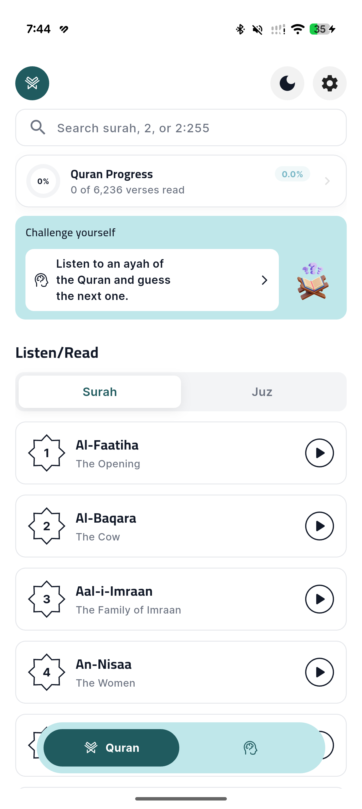
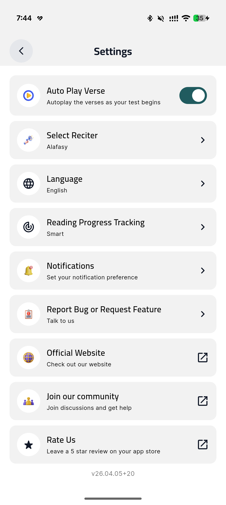
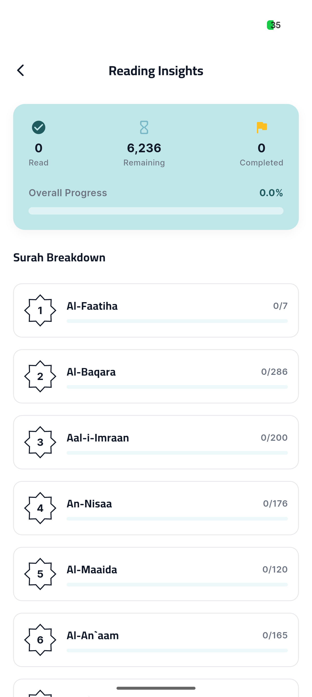
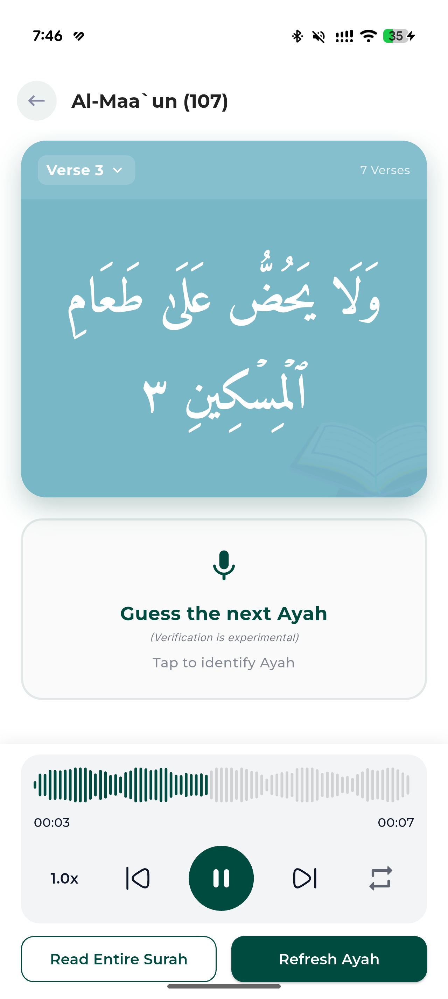
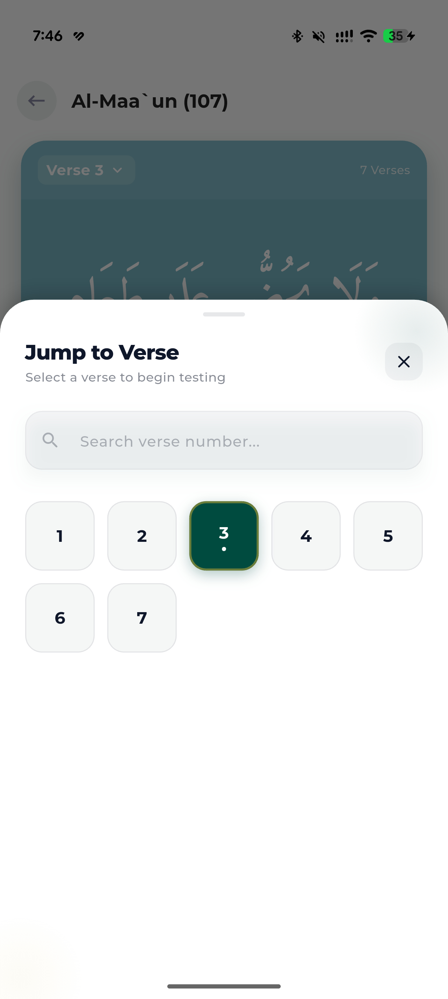
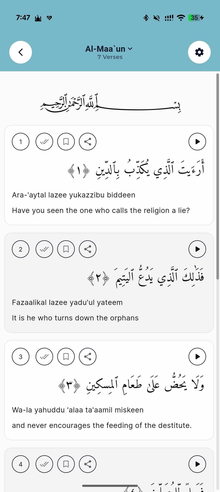
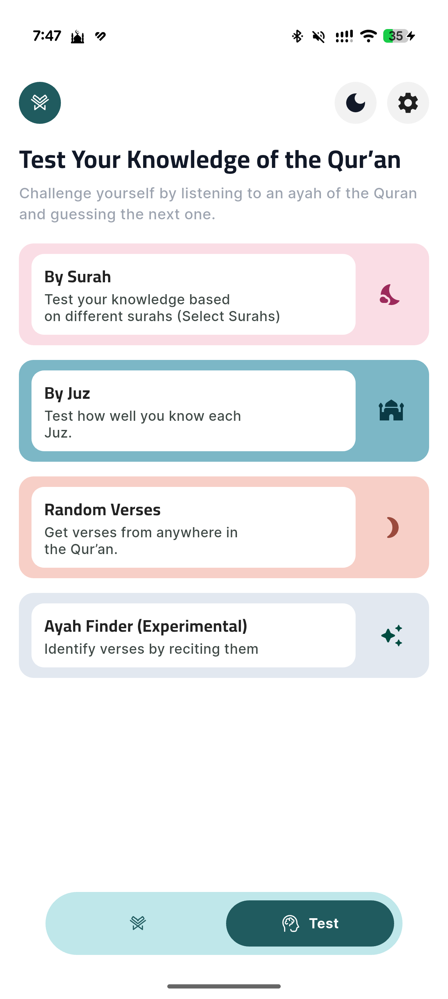
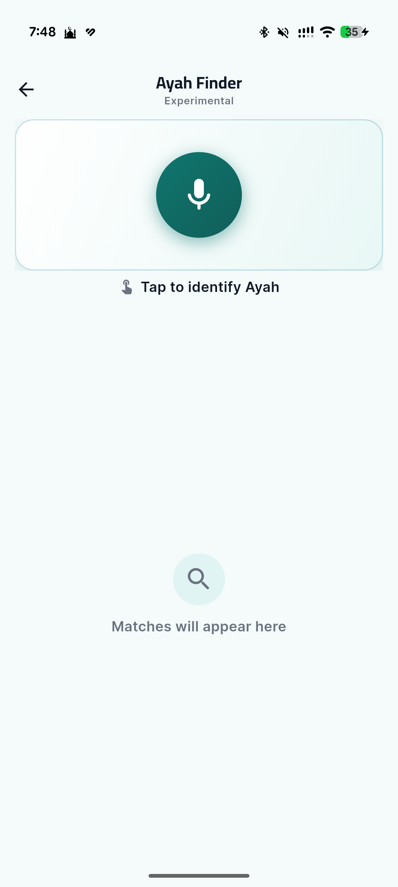
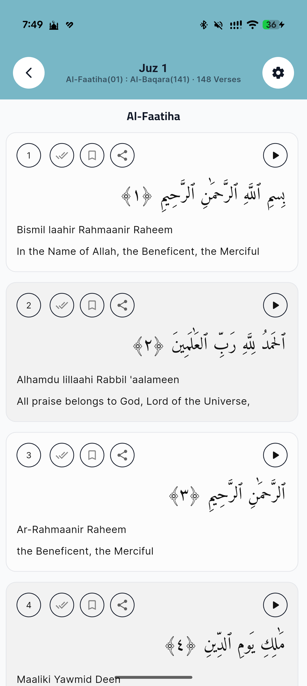
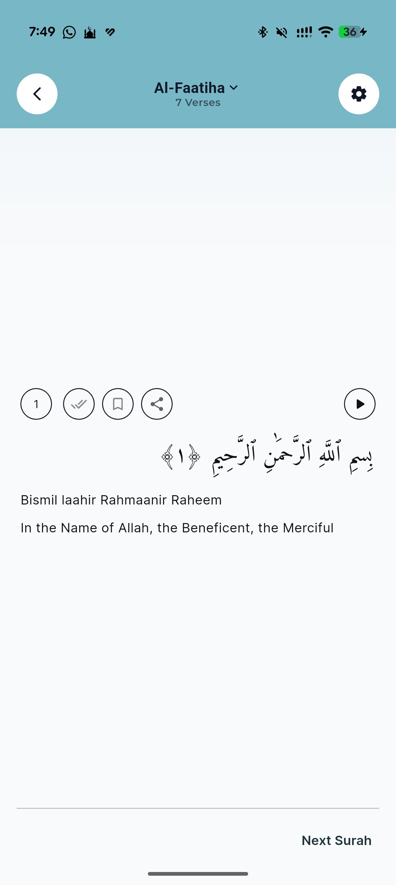
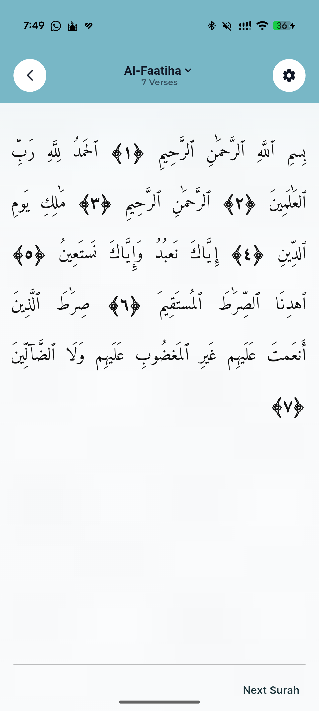
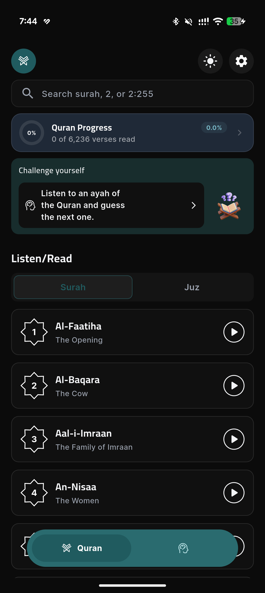
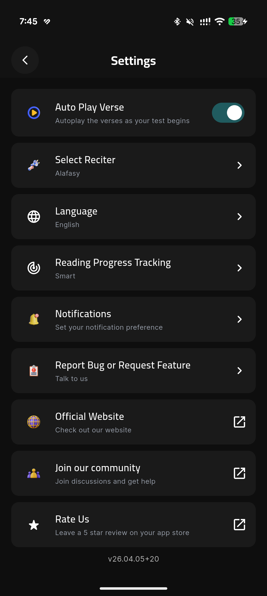
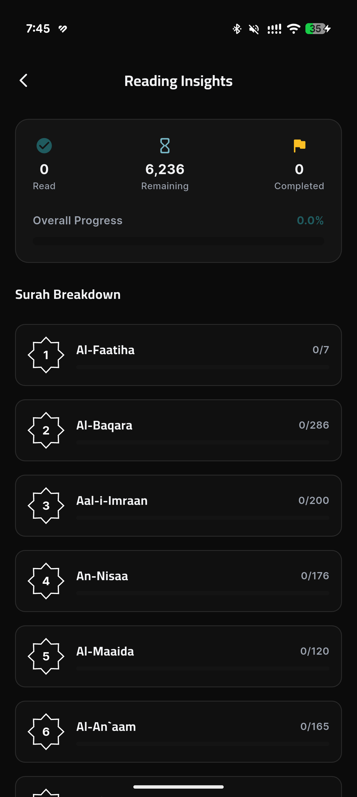
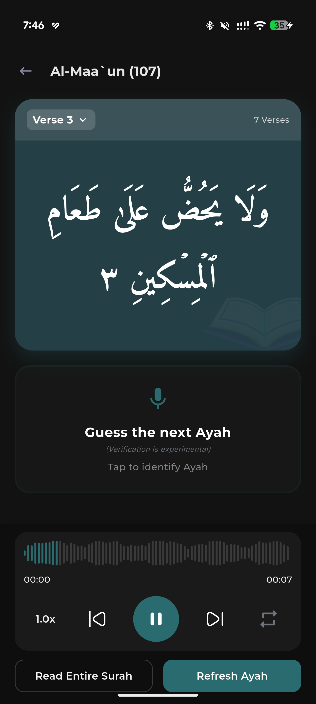
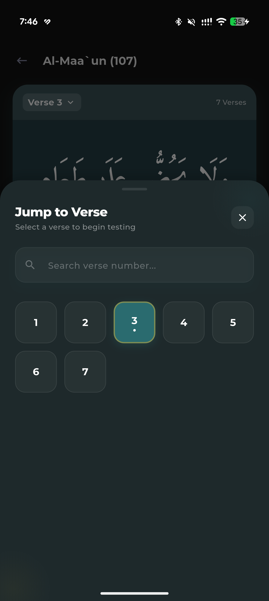
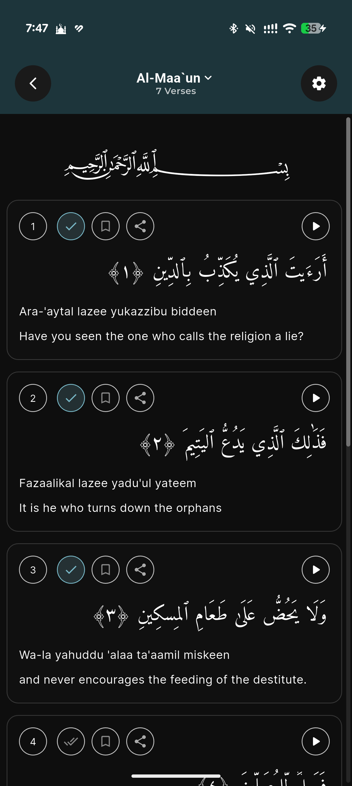
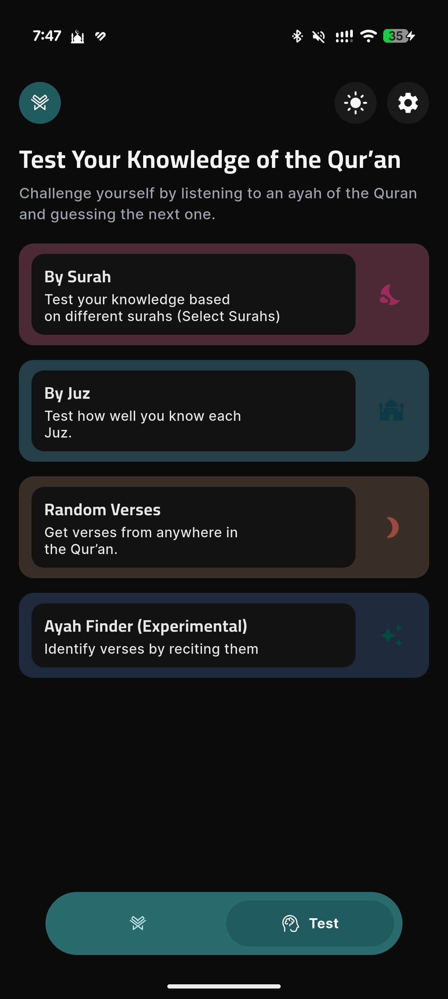
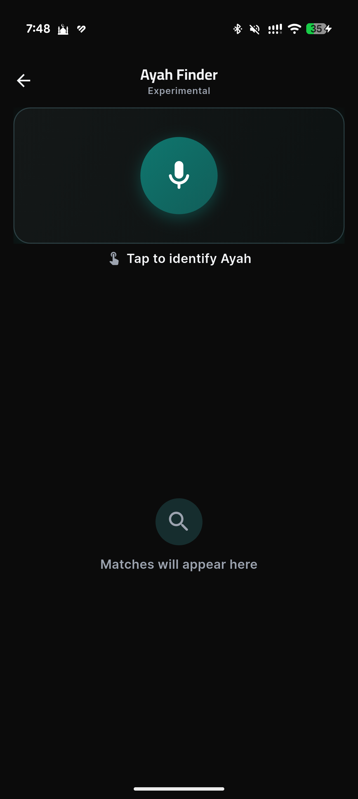
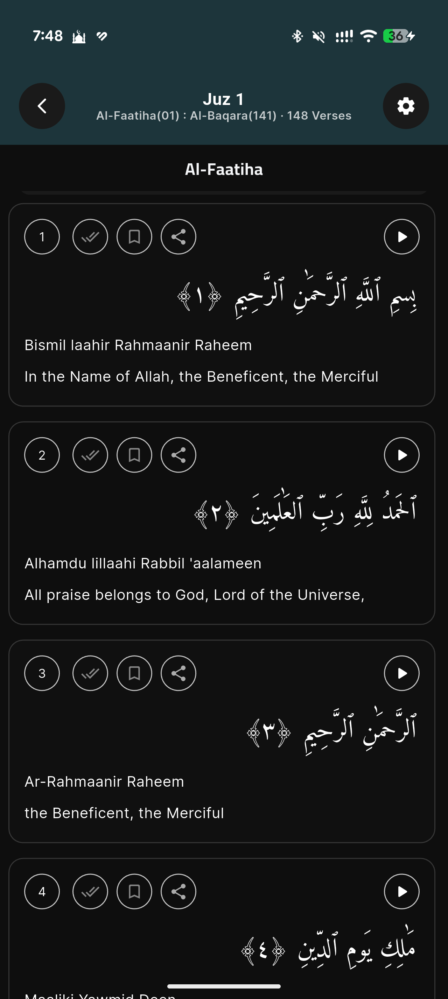
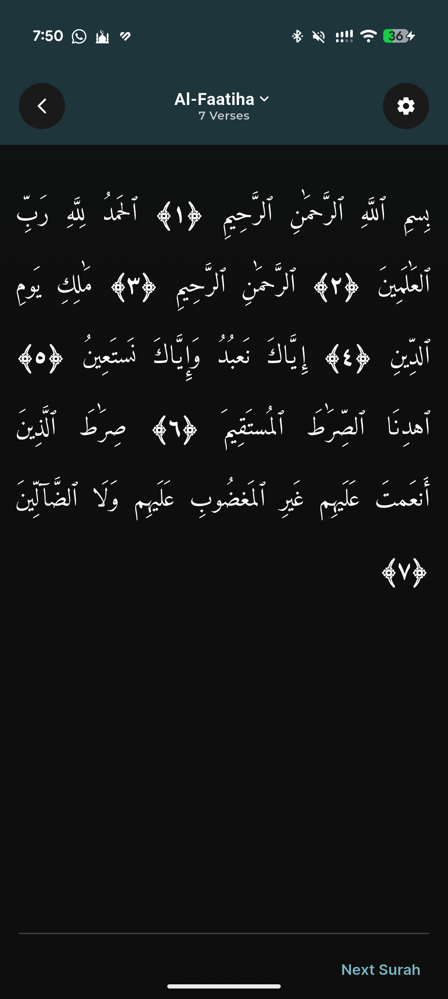
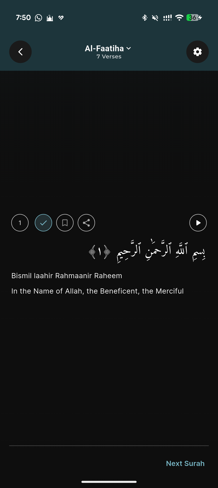
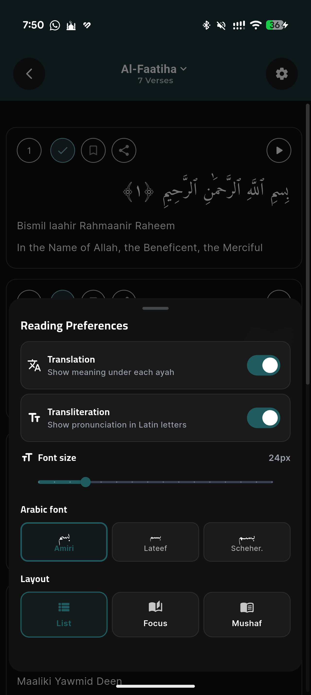